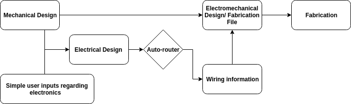

The objective of this research is to build a mechatronic system to study proprioception in children. This system includes a mechanical design for the experiment setup, and a software system that acquires bio-data also delivers visual feedback. The aiming subject in this research is children between 3 to 6 years old. This system that provides visually attractive interfaces allows the participant to stay focus on the experimental tasks. The experiment contains a maximum torque test and perceptual testing tasks. This system carries on the experiment and records data for further research.
Motivation
Adults with stroke usually lose their ability to do sensorimotor tasks. Studies state that the brain of an adult has been developed well to achieve particular proficiency in limb movement patterns. Researches have shown that the human brain develops primary sensory and motor skills in one's early ages. In children, there is a higher chance that one can still perform functional sensorimotor tasks even with stroke. This project sets up an experiment to obtain data while children are performing sensorimotor tasks, ultimately, to understand the neuroplasticity of children with stroke.
Method
The system acquires data of the subject's upper limb performance through two torque sensors. We used a DAQ card for data acquisition. A python script streams the sensory data at 1000Hz and passes signals to a callback function. The callback function utilizes the linear equation resulted from the calibration process to convert a voltage signal to actual torque generated by the subject. It also calls a zeroing function before rendering any interface for bias issues. The perceptual testing tasks use the result from the maximum torque test (maximum torque) and real-time torque to determine the visual feedback. The system renders interfaces at 27Hz and recording data at 1000Hz.
The goal of this project is to develop a feedback device that can simulate the whisking of the robotic rat in real-time. The robotic rat can send the digital voltage signals to an MCU with sensed bending in pitch and yaw. Based on the geometry of the feedback device, we project such signals into three axes. Multiple vibration motors are used in the system to represent the direction of bending. We use PWM to control the frequency of motos to describe the magnitude of the bending.
Method and Current Status
Current Mechanical Design of the Haptic Feedback Device
We use six micro vibration motors to form a ring-shaped device. Each two of them are activated to describe one direction since they provide contrast to enhance the actual feeling from the human. The frequency of vibration is controlled through PWM from 100Hz (50%) to 200Hz (100%).
Current Software Interface of the Haptic Feedback Device
The micro-controller takes input of the signal as a format of (x,y). It computes which two motors are required to describe the direcation and duty cycle, respectively.
Projection based on the Geometric of the Haptic Feedback Device
Date: November 2019
Automatic Design and Rapid Fabrication for Foldable Robots
This work presents an integrated design-to-fabrication method for foldable electromechanical devices that
rethinks the merging of mechanical and electrical designs. The mechanical substrate of this device can carry electrical
functionality; the electrical circuits are parts of the device body.
We developed a pipeline to implement electrical circuits on
arbitrary geometric outlines, and created an abstraction for
the electrical specifications to be described by simple tables. By
utilizing an automatic routing tool and a modular system devel-
oped to transfer the electrical design to mechanical drawings, an
electromechanical design can be created for rapid fabrication.
The integrated fabrication process uses a single inexpensive
desktop paper/vinyl cutter to create a foldable device with
embedded circuitry in a timeframe of minutes. Non-experts
can use this system to easily complete a foldable design having
mechanical and electrical components, such as an origami-
inspired printable robot.

The pipeline takes a mechanical design and simple electrical
components inputs as system inputs. Both inputs are used for software to
do electrical design. This design is merged with a processed mechanical
design to output one single electromechanical design for fabrication
This project involves advanced techniques of Digital signal process, Machine Learning, and common algorithm in Neuroscience. The documentation also will discuss different algorithms and how they fit with various types of data used in this project as a research topic.
Block diagram of ROS nodes in Mind-wave cursor control system
The objective of this project is to control cursor movement on the computer by human intention through brain computer interface (BCI). It includes an electroencephalography (EEG) data collection from EEG monitor. The monitor is expected to track the electrical activity (bio potential) of the brain (mainly focus on motor cortex, the part of brain oversees movement). The project is mainly focusing on classify left or right movement for now. The completed project allows subjects to think about executing cursor movement with corresponding hand movement and covert mind-wave signal to real-time cursor movement.
This is a mechatronics project that uses PIC32 to control motor through PID. The project allows the motor to move to certain position (in degree) without overshoot and in a reasonable range of raise time. Besides that, the motor is allowed to move along user input trajectory as well. The microcontroller was programmed through C to keep tracking motor positions and input current by adapting two feedback loops. It sends required current to motor through H-bridge and sends data back to computer so it can plot and show performance of such controller parameters.
The project is to design and build an ECG monitor from scratch. The circuit includes an op-amp and two band pass filters. It also includes several electrical elements as protection for bio usage, such as manual baseline-restore switch, input over-voltage protection, and self-calibration switch for ECG. The built equipment could also switch voltage-gain values of 500, 1000 and 2000. The demo video shows a diagram of LEAD I ECG through DEGILENT Wavelet. The project also observes the impedance change through bio potential when subject inhaled and fill air one's pulmonary system
Circuit Diagram of ECG Amplifier System
Specifications
- Bandwidth : 0.05 to 100 Hz - Manual baseline-restore switch - Input over-voltage protection - Battery powered manual 1-mV self-calibration switch - Voltage-gain values of 500, 1000, and 2000
Design
The voltage-gain value of the amplifier system was consisted of an op-amp (OP484), an active high pass filter, and an active low pass filter. The theoretical gain will follow the following equation.
Where R1 to R7, C1, and C2 is the corresponding Resistors and Capacitors in circuit diagram.
The design of band pass filter follows the rule as following. Where Wc is corner frequency and f is desired bandwidth
The demo video shows the Baxter received a 2-digit number, performed number decompose computation, and fetched two resulted numbers
Actual settings and equipment layout
The project goal is to allow Baxter, manufactured by Rethink Robotics, to perform robust block pick and place using single digit handwritten numbers on the object. The project includes a session of machine learning to recognize handwritten numbers and locate such object in camera frame. Another package works with AR tag assistance to generate the actual transformation matrices in real-world unit from pixel location in camera frame. The robot is able to read such object information quickly and perform pick& place with optimized trajectory planning and without any collision with surroundings.
The project is a dynamics simulation of block in a tumbler by applying Euler Lagrange Equation through Mathematica. The motion has been divided to 7 parts. This project shows techniques expansion from theory and ability of building physical model.
• Trajectory 1 : The block starts from blade 2 (right side blade) and sliding down form the blade. The blade was treated as varying constraint on two corner points of triangular block. The block will fall after sliding from the blade.
The constraint was off when the mid bottom point of triangle pass beyond the blade inner tip by using “Whenevet” and setting left hand side of E-L to zeros. • Trajectory 2 : The block fall from the blade and hit the tumbler inner edge with a plastic impact. From animation A2, it is more obvious to see the plastic impact make the block move along the tumbler edge for a few seconds. • Trajectory 2.5 : Another corner of block impact with the tumbler. It is hard to tell from the animation that two corners of the block hit the tumbler separately. The time of those two impacts are very close (2.19386s and 2.19459s)
• Trajectory 3 : Take the velocity update computed from Trajectory 2.5 and set the inner edge of tumbler as a constraint on two corners of the block. The animation shows the block sliding at the bottom of the tumbler with initial velocity given from Trajectory 2.5 • Trajectory 4: The block is sliding on the bottom of tumbler until it hit by the coming blade ( blade 3 in this case) as another plastic impact. The impact law was used to compute updated velocity. • Trajectory 6: Simulate the animation until the block reach the same position as the beginning of animation.
The project is to perform dermatology diagnose through machine learning techniques those built from scratch. The algorithms used in this project includes feature selection, boosting selection, gradient descent, and fusion rule. The GUI was allowed to return the probability of certain prediction back to user. More detail was explained through the above demonstration video.